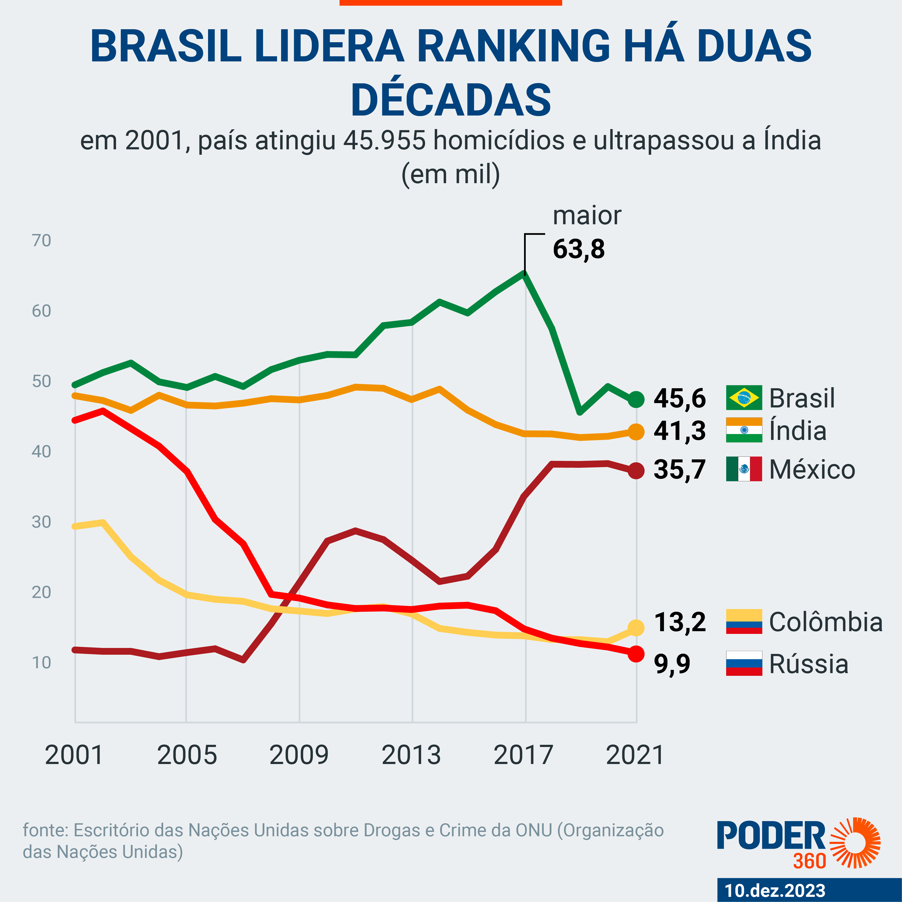

O que é Reconstituição de Eventos Criminais?
Você já deve ter ouvidor falar sobre a "Reconstituição de Eventos Criminais" em algum momento, mas já parou pra pensar como ocorre esse procedimento? Bom, a Reconstituição de eventos criminais é quando a polícia ou os investigadores tentam refazer, passo a passo, o que aconteceu em um crime, com base nas evidências e depoimentos. Eles voltam ao local do crime e reproduzem os movimentos, as ações, e o cenário, como se estivesse acontecendo de novo. É um procedimento muito importante para encontrar inconsistências e reforçar a investigação.
Aumento das Taxas de Homicídios:
O Brasil infelizmente apresentou um crescimento gigantescos nas taxas de homicídios entre 1979 e 2011, com um aumento de quase 190% no número de assassinatos. Em 2011, foram registrados mais de 52.000 homicídios no país, o que representa uma pessoa assassinada a cada 15 minutos. Os homicídios geraram grandes prejuízos econômicos, com perdas estimadas em R$ 9 bilhões anuais. Isso inclui tanto a perda de capital humano quanto os custos relacionados ao sistema de saúde pública... Trágico... Mas isso não é só sobre dinheiro.

Perfil das Vítimas:
As vítimas de homicídios no Brasil são em maioria jovens, do sexo masculino, com baixa escolaridade e residentes em áreas de alto risco social. A violência está concentrada em regiões específicas, como favelas, e bairros periféricos (as famosas "quebradas) das grandes cidades. A partir dos anos 1990, houve uma mudança no local onde os homicídios ocorrem, com um aumento dos assassinatos em vias públicas, muitas vezes com características de execução. O diabo é sujo demais cara.
Qual é a importância?
A reconstituição de eventos criminais é importante porque ajuda a esclarecer pontos que, às vezes, não ficam tão claros apenas com depoimentos ou análises técnicas. Ela permite que os investigadores visualizem como o crime pode ter acontecido, testando as versões dos envolvidos e comparando com as evidências físicas, como marcas de sangue, trajeto das balas, ou o comportamento das pessoas no local.
é crucial para verificar se a versão apresentada por testemunhas ou suspeitos é possível e faz sentido diante da realidade dos fatos. Também pode revelar novos detalhes que passaram despercebidos, corrigir falhas e até trazer à tona contradições, ajudando a definir a linha de investigação. Para o julgamento, a reconstituição pode oferecer uma visão mais precisa do que ocorreu, fortalecendo o processo de busca pela verdade.
Na reconstituição de eventos criminais, participam investigadores e peritos que coordenam o processo, além de suspeitos e/ou testemunhas para refazerem suas versões. Advogados de defesa e acusação também podem estar presentes, junto com policiais para segurança. Promotores e, às vezes, juízes acompanham em casos mais graves. Todos participam para esclarecer os fatos e verificar a coerência das versões com as evidências.
Clique Aqui para Investigar!
Instruções: Os QR-Codes espalhados pela sala escondem uma pista. Após ser redirecionado para a tela de escaneamento aponte a câmera do seu celular.